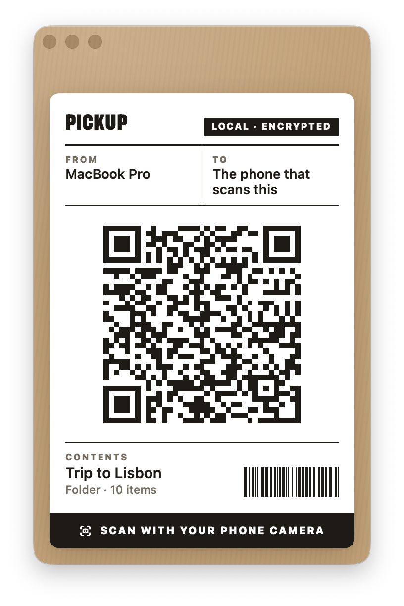
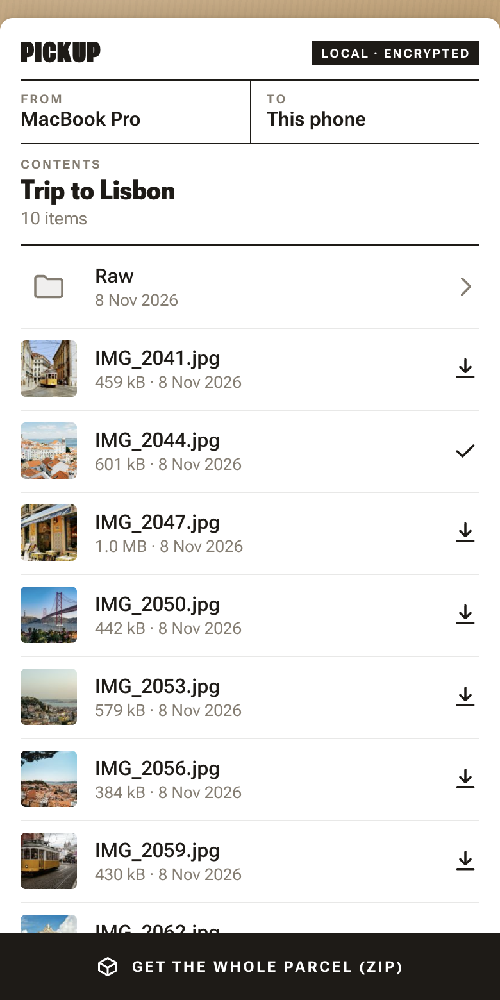

Pickup
PickupPack it on your Mac.
Pick it up with your phone.
Right-click files or a folder, and Pickup prints a QR label. Any phone on your Wi-Fi scans it and takes the files. It works the other way round, too. No app, no cloud, no account.


Right-click, scan, done.
1Pack
Right-click files or a folder in the Finder and choose Share via QR Code at the bottom of the menu.
2Scan
A shipping label with a QR code opens on your Mac. Point the phone camera at it.
3Pick up
The phone shows the parcel. Save single files, open folders, or get everything as one ZIP.
And the other way round.
Right-click a folder and choose Receive via QR Code. The phone scans the label and sends photos, videos or any other files straight into that folder.
- Open Pickup itself to receive into Downloads. Click the folder on the label to pick another one.
- A drop-off, not a share. The phone cannot see what is in the folder.
- Nothing gets replaced. A name that exists gets a number, like “photo 2.jpg”.
Your files never leave the room.
Only for the phone that scans
The QR code carries a secret unique to this share. Without it, the Mac sends nothing. Everything travels encrypted.
No cloud, no account
Mac and phone talk directly over your Wi-Fi. No server in between, no upload, not even internet access.
Nothing to install on the phone
The camera and the browser are all it needs. Hand the label to a friend, and they have the files.
Get it.
curl -fsSL https://pickup.gnass.buzz/install.sh | shPaste it into the Terminal. It installs Pickup and adds “Share via QR Code” and “Receive via QR Code” to the Finder. Pickup is not signed with an Apple developer certificate; apps installed from the Terminal get no warning from macOS. You can read the script first.
Install without the Terminal
- Download Pickup.zip and move
Pickup.appinto your Applications folder. - Open it. macOS says that it cannot check the app. Click Done.
- Open System Settings → Privacy & Security. Near the bottom, click Open Anyway next to Pickup.
- Open the app again and confirm. You only do this once.
Build from source
You need Go and the Xcode Command Line Tools.
git clone https://github.com/fgnass/pickup && cd pickup && ./build.sh install
Questions.
How does the transfer work, exactly?
- When you choose Share via QR Code, Pickup starts a small web server on your Mac. It listens on a random port of the Mac's local network address only. For this share, Pickup makes a new key pair and a random 128-bit secret.
- The QR code holds a link like
http://192.168.1.20:52814/#…. The part after#carries the secret and the fingerprint of the Mac's key. A browser never sends this part over the network; it stays on the phone. - The phone loads the page from the Mac and opens a direct WebRTC connection to it. There is no server in between and no internet involved. The connection is encrypted with DTLS.
- Before it trusts the connection, the page checks that the Mac's key matches the fingerprint from the QR code. So the phone knows it talks to your Mac and not to another device.
- Only then the phone sends the secret, inside the encrypted connection. The Mac compares it. A device without the secret gets nothing and is disconnected after 15 seconds.
- File lists, previews and files travel over this connection. A ZIP is packed on the fly while it is sent; nothing is written to disk.
- The share ends when you close the window. It also ends by itself: a single file after the download, folders 10 minutes after the last phone left, or 30 minutes after start if nobody scanned the code. Then the secret and the key are gone.
Receive via QR Code uses the same connection and the same checks, only the files go the other way.
The source code is on GitHub.
What happens to files from the phone?
- Each file goes into a hidden temporary file first. Only when it is complete does it get its real name. If the connection breaks, the Mac deletes the incomplete file.
- Pickup never replaces a file. If the name exists, the new file gets a number.
- Names from the phone are cleaned up: no slashes, no hidden files.
- Like a download from a browser, each file gets the macOS quarantine flag. So Gatekeeper checks it before it opens.
- The phone cannot list, open or delete anything in the folder.
What is not protected?
- The page itself. The phone loads the page (HTML and JavaScript) over plain HTTP, because a local address can get no trusted certificate. Someone who only listens on your Wi-Fi sees the page code, but no secret and no file data. But an attacker who can actively change traffic in your network could swap the page for a fake one and so get the secret and the files. So use Pickup on networks you trust, such as your home or office Wi-Fi, not on public hotspots.
- The QR code. Whoever sees the code can pick up the files while the share is open: over your shoulder, in a screenshot or in a screen share. For Receive via QR Code, they can put files into your folder. Close the window to stop at once.
- Your network can see that something happens. Other devices can see that your Mac runs a web server and how much data goes to the phone. They cannot see names or contents.
- The app is not signed by Apple. macOS does not check it. You trust the code on GitHub and the release built from it. You can read the source and build it yourself.
“Share via QR Code” is not in the menu
Open System Settings → Keyboard → Keyboard Shortcuts → Services → Files and Folders and turn on Share via QR Code and Receive via QR Code. You can also give them a shortcut there.